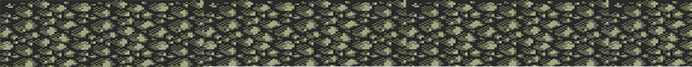
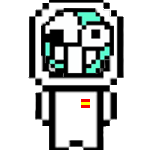
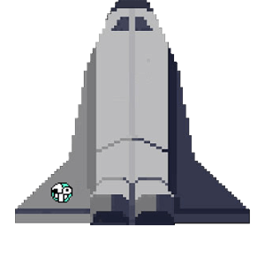
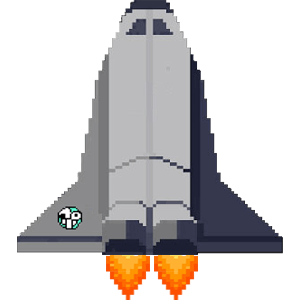

-
100
m/s
-
100
litros
-
20
metros
ACERCA DE:
Autor: Luis Rigo
El juego ha sido desarrollado utilizando código javascript, html y css. Como editor de texto se ha utilizado NotePad++.
Ocultar Acerca De
Instrucciones:
El objetivo del juego es hacer aterrizar la nave a una velocidad mínima para que no explote.
Pulsando cualquiera tecla, harás accionar el motor de la nave, pero ten cuidado con no quedarte sin gasolina.
Si consigues aterrizar a una velocidad prudente habrás ganado el juego!
Pulsando el icono menú, se abrirá un menú desplegable con opciones como Reanudar o Reiniciar, pruébalo!
Ocultar Instrucciones
JUEGO PAUSADO
Autor: Luis Rigo
El juego ha sido desarrollado utilizando código javascript, html y css. Como editor de texto se ha utilizado NotePad++.